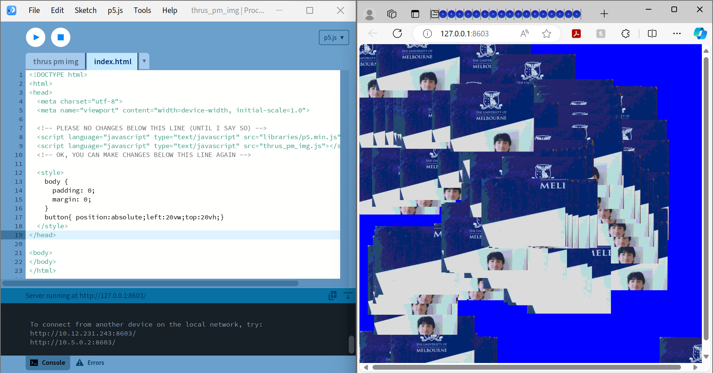

"How many different ways can you interact with a web-based script?"
"Imagine some alternatives? How could they work?"
^Creating circles from storage data
^Making circles flash random colours
^Increasing the scale of the circles
^Making the circles not flash
^Adding Labels to the circles
^Making an arc
^Setting up a code which allows me to change the values easily.
^Viewing the code in the console log
^Randomly generating colours in each sector
^Getting rid of the stoke.
WORKSHOP ACTIVITY 2: Image & Sound
"How to use image, video & webcam"
"Filters, effects and pixel-manipulation"
^Experimenting with image settings
^Experimenting with mouse Icons

^Changing mouse to another image when clicked
^Making the mouse icon the camera viewport.
^Making the full page a camera viewport.
^Making the mouse select the colour in the viewport.
^Posterising the viewport
^Re-scaling the viewport, and making the mouse path show.
^Making the mouse slowly map the viewport when moved across the screen.
^Mapping the image through randomly sized buttons.